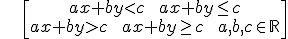

Una inecuación lineal con dos incógnitas es una desigualdad algebraica equivalente a una con una de estas formas:

Ejemplos:
3x + 5y – 7 > 0 3(x + 2) ≤ 5(y - 3) + 12
Para resolver estas inecuaciones:
–Representamos la recta ax + by = c
–Esta recta divide el plano en dos partes y tenemos que comprobar qué parte verifica la inecuación.
–Al final, decidimos si la recta es parte de la solución dependiendo de si la inecuación tiene igual o no.
Ejemplo:
Ejercicio. Resuelve las siguientes inecuaciones:
Soluciones:
a)
b)